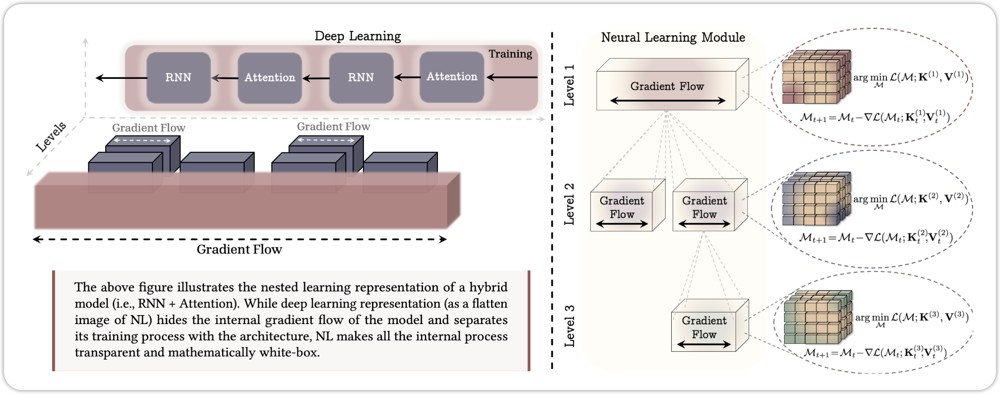

All kinds of “Learnings” in Deep Learning
In the AI field, Deep Learning, which is a subset of machine learning, has revolutionized the way we approach complex problems. One of the key aspects of Deep Learning is the various “learnings” or learning paradigms that enable models to acquire knowledge from data. In this blog, I will cover all kinds of learnings in Deep Learning, including supervised learning, unsupervised learning, self-supervised learning, reinforcement learning, and more. By the end, you will have a solid understanding of different learning paradigms in Deep Learning.
1 Supervised Learning
The most common and widely used learning paradigm in Deep Learning is Supervised Learning. In supervised learning, the model is trained on a labeled dataset, where each input data point is paired with its corresponding output label. The goal of the model is to learn a mapping from inputs to outputs, allowing it to make accurate predictions on unseen data. Mathematically, supervised learning can be formulated as follows: Given a dataset \(\mathcal{D}= \{(x_i, y_i)\}_{i=1}^{N}\), where \(x_i \in \mathbb{R}^d\) represents the input data and \(y_i\) represents the corresponding output value, the objective is to learn a function \(f: X \rightarrow Y\) such that \(f(x_i) \approx y_i\) for all \(i\).
1.1 Regression Problems
When the output variable is continuous, the task is referred to as a regression problem. Common examples of regression problems include predicting house prices, stock prices, or temperature values. Popular loss functions used in regression tasks include Mean Squared Error (MSE) and Mean Absolute Error (MAE).
Mean Squared Error (MSE): \[ \mathcal{L}_\text{MSE} = \frac{1}{N} \sum_{i=1}^{N} (y_i - f(x_i))^2 \tag{1}\]
Mean Absolute Error (MAE): \[ \mathcal{L}_\text{MAE} = \frac{1}{N} \sum_{i=1}^{N} |y_i - f(x_i)| \tag{2}\]
1.2 Classification Problems
When the output variable is categorical, the task is referred to as a classification problem. Common examples of classification problems include image classification, spam detection, and sentiment analysis. Popular loss functions used in classification tasks include Cross-Entropy Loss and Hinge Loss.
Cross-Entropy Loss: \[ \mathcal{L}_\text{CE} = - \frac{1}{N} \sum_{i=1}^{N} \sum_{c=1}^{C} y_{i,c} \log(f_c(x_i)) \tag{3}\] Hinge Loss: \[ \mathcal{L}_\text{Hinge} = \frac{1}{N} \sum_{i=1}^{N} \max(0, 1 - y_i f(x_i)) \tag{4}\]
2 Unsupervised Learning
Unlike supervised learning, Unsupervised Learning involves training models on unlabeled data, where the goal is to discover patterns, structures, or relationships within the data without any explicit guidance. Unsupervised learning is particularly useful for tasks such as clustering, dimensionality reduction, and generative modeling. What we have is a dataset \(\mathcal{D}= \{x_i\}_{i=1}^{N}\), where \(x_i \in \mathbb{R}^d\) represents the input data. The objective is to learn the underlying structure or distribution of the data. It can be broadly categorized into the following subfields:
- Clustering
- Dimensionality Reduction
- Generative Models
2.1 Clustering
Clustering is the task of grouping similar data points together based on their features or characteristics. Common clustering algorithms include K-Means, Hierarchical Clustering, and DBSCAN.
2.2 Generative Models
Generative models aim to learn the underlying distribution of the data and generate new samples that resemble the original data. Some popular generative models include:
- Variational Autoencoders (VAE)
- Generative Adversarial Networks (GANs)
- Normalizing Flows
- Energy-Based Models
- Diffusion Models
2.2.1 Variational Autoencoders (VAE)
The Variational Autoencoder (VAE) is a generative model that combines principles from variational inference and autoencoders. It consists of an encoder network that maps input data to a latent space and a decoder network that reconstructs the data from the latent representation. The VAE is trained to maximize the evidence lower bound (ELBO) on the data likelihood, which encourages the model to learn a meaningful latent representation while also generating realistic samples. The loss function for VAE can be expressed as:
\[ \mathcal{L}_\text{VAE} = \mathbb{E}_{ q_\phi(z|x)}[\log p_\theta(x|z)] - D_{KL}(q_\phi(z|x) || p(z)) \tag{5}\]
2.2.2 Generative Adversarial Networks (GANs)
Generative Adversarial Networks (GANs) are a class of generative models that consist of two neural networks: a generator and a discriminator. The generator aims to produce realistic samples that resemble the training data, while the discriminator tries to distinguish between real and generated samples. The two networks are trained in a minimax game, where the generator tries to fool the discriminator, and the discriminator tries to correctly classify real and fake samples. The objective function for GANs can be expressed as:
\[ \min_G \max_D \mathbb{E}_{x \sim p_\text{data}(x)}[\log D(x)] + \mathbb{E}_{z \sim p_z(z)}[\log(1 - D(G(z)))] \tag{6}\]
2.2.3 Normalizing Flows
Normalizing Flows are a class of generative models that transform a simple probability distribution (e.g., Gaussian) into a more complex distribution by applying a series of invertible and differentiable transformations. The key idea is to use the change of variables formula to compute the likelihood of the data under the transformed distribution. Normalizing flows are trained by maximizing the log-likelihood of the data, which can be expressed as:
\[ \log p_X(x) = \log p_Z(f^{-1}(x)) + \log \left| \det \frac{\partial f^{-1}(x)}{\partial x} \right| \tag{7}\]
2.2.4 Energy-Based Models
Energy-Based Models (EBMs) are a class of generative models that define a probability distribution over the data using an energy function. The energy function assigns low energy values to data points that are likely to occur and high energy values to unlikely data points. The probability distribution is defined as:
\[ p(x) = \frac{e^{-E(x)}}{Z} \tag{8}\] where \(E(x)\) is the energy function and \(Z\) is the partition function that normalizes the distribution. EBMs are trained by minimizing the energy of the training data while maximizing the energy of negative samples, which can be achieved using techniques such as Contrastive Divergence or Score Matching.
2.2.5 Diffusion Models
Diffusion Models are a class of generative models that learn to generate data by reversing a diffusion process. The diffusion process gradually adds noise to the data, transforming it into a simple distribution (e.g., Gaussian). The model is trained to learn the reverse process, which denoises the data step by step, ultimately generating samples from the original data distribution. The training objective for diffusion models can be expressed as:
\[ \mathcal{L}_\text{diffusion} = \mathbb{E}_{x_0, \epsilon, t} \left[ \| x_0 - f_\theta(x_t, t) \|^2 \right] \tag{9}\] where \(x_0\) is the original data, \(x_t\) is the noised data at time step \(t\), \(\epsilon\) is the noise added, and \(f_\theta\) is the denoising function parameterized by \(\theta\).
3 Self-Supervised Learning
Self-Supervised Learning is a learning paradigm that leverages unlabeled data to create supervisory signals for training models. Create a pre-text task. In self-supervised learning, the model learns to predict certain aspects of the input data based on other parts of the data. This approach allows models to learn useful representations without the need for explicit labels. Common techniques in self-supervised learning include:
- Contrastive Learning
- Masked Language Modeling (MLM)
3.1 Contrastive Learning
Contrastive Learning is a self-supervised learning technique that aims to learn representations by contrasting positive and negative pairs of data points. The model is trained to bring similar data points (positive pairs) closer together in the representation space while pushing dissimilar data points (negative pairs) apart. A popular loss function used in contrastive learning is the InfoNCE loss, which can be expressed as
\[ \mathcal{L}_\text{InfoNCE} = - \log \frac{\exp(\text{sim}(h_i, h_j) / \tau)}{\sum_{k=1}^{N} \exp(\text{sim}(h_i, h_k) / \tau)} \tag{10}\] where \(h_i\) and \(h_j\) are the representations of the positive pair, \(h_k\) are the representations of negative samples, \(\text{sim}(\cdot, \cdot)\) is a similarity function (e.g., cosine similarity), and \(\tau\) is a temperature parameter.
One of the most popular frameworks for contrastive learning is SimCLR(Chen et al. 2020), which uses data augmentations to create positive pairs and employs a deep neural network to learn representations.
The other one is DINO (Caron et al. 2021), which leverages a teacher-student architecture to learn representations without the need for negative samples. 
The other contrastive learning methods is CLIP(Radford et al. 2021), which learns joint representations of images and text by contrasting image-text pairs. CLIP has demonstrated impressive zero-shot learning capabilities across various vision tasks.
3.2 Masked Language Modeling (MLM)
Masked Language Modeling (MLM) is a self-supervised learning technique commonly used in natural language processing (NLP). In MLM, a portion of the input tokens in a text sequence are randomly masked, and the model is trained to predict the original tokens based on the context provided by the unmasked tokens. This approach allows the model to learn contextual representations of words and phrases. The loss function for MLM can be expressed as:
\[
\mathcal{L}_\text{MLM} = - \sum_{i \in \mathcal{M}} \log p_\theta(x_i | x_{\setminus \mathcal{M}})
\tag{11}\] where \(\mathcal{M}\) is the set of masked token positions, \(x_i\) is the original token at position \(i\), and \(x_{\setminus \mathcal{M}}\) represents the input sequence with masked tokens.
3.3 AutoRegressive Modeling
AutoRegressive Modeling is another self-supervised learning technique widely used in natural language processing . In autoregressive modeling, the model is trained to predict the next token in a sequence given the previous tokens. This approach allows the model to learn sequential dependencies and generate coherent text. The loss function for autoregressive modeling can be expressed as: \[ \mathcal{L}_\text{AR} = - \sum_{i=1}^{N} \log p_\theta(x_i | x_{<i}) \tag{12}\] where \(x_i\) is the token at position \(i\), and \(x_{<i}\) represents the sequence of tokens preceding position \(i\).
4 Semi-Supervised Learning
Semi-Supervised Learning is a learning paradigm that combines both labeled and unlabeled data to improve model performance. In many real-world scenarios, obtaining labeled data can be expensive and time-consuming, while unlabeled data is often abundant. Semi-supervised learning leverages the information from unlabeled data to enhance the learning process. Common techniques in semi-supervised learning include: - Pseudo-Labeling - Consistency Regularization
To train a semi-supervised learning model, we have a labeled dataset \(\mathcal{D}_L = \{(x_i, y_i)\}_{i=1}^{N_L}\) and an unlabeled dataset \(\mathcal{D}_U = \{x_j\}_{j=1}^{N_U}\). The objective is to learn a function \(f: X \rightarrow Y\) that performs well on both labeled and unlabeled data. The overall loss function can be expressed as: \[ \mathcal{L}_\text{SSL} = \mathcal{L}_\text{supervised} + \lambda \mathcal{L}_\text{unsupervised} \tag{13}\] where \(\mathcal{L}_\text{supervised}\) is the loss computed on the labeled data, \(\mathcal{L}_\text{unsupervised}\) is the loss computed on the unlabeled data, and \(\lambda\) is a hyperparameter that balances the two loss components.
5 Deep Reinforcement Learning
Deep Reinforcement Learning (DRL) is a learning paradigm that combines reinforcement learning (RL) with deep learning techniques. In DRL, an agent learns to make decisions by interacting with an environment, receiving feedback in the form of rewards or penalties. The goal of the agent is to learn a policy that maximizes the cumulative reward over time. DRL has been successfully applied to various domains, including game playing, robotics, and autonomous systems.
There are several common algorithms in deep reinforcement learning, including: - Deep Q-Networks (DQN): Double DQN, Dueling DQN - Policy Gradient Methods: REINFORCE, Proximal Policy Optimization (PPO) - Actor-Critic Methods: A3C, DDPG
6 Representation Learning
Representation Learning is a learning paradigm that focuses on learning useful and informative representations of data. The goal of representation learning is to transform raw input data into a more meaningful and structured form that can be effectively used for downstream tasks such as classification, regression, or clustering. Representation learning can be achieved through various techniques, including: - Autoencoders - Principal Component Analysis (PCA) - t-Distributed Stochastic Neighbor Embedding (t-SNE)
7 Transfer Learning
Transfer Learning is a learning paradigm that focuses on leveraging knowledge gained from one task or domain to improve performance on a different but related task or domain. The main idea behind transfer learning is that the features and representations learned by a model on a source task can be useful for solving a target task, especially when the target task has limited labeled data.
8 Multi-Task Learning
Multi-Task Learning (MTL) is a learning paradigm where a single model is trained to perform multiple related tasks simultaneously. The main idea behind MTL is that by sharing representations and knowledge across tasks, the model can learn more generalizable features that improve performance on each individual task. MTL can be particularly beneficial when the tasks are related and share commonalities, as it allows the model to leverage shared information and reduce overfitting.
9 Meta Learning
Meta Learning, also known as “learning to learn,” is a learning paradigm that focuses on training models to quickly adapt to new tasks or environments with minimal data. The main idea behind meta learning is to learn a meta-model that can generalize across a distribution of tasks, allowing it to efficiently learn new tasks by leveraging prior knowledge gained from previous tasks.
10 Online Learning
Online Learning is a learning paradigm where the model learns incrementally from a stream of data, updating its parameters as new data points arrive. Unlike traditional batch learning, where the model is trained on a fixed dataset, online learning allows the model to adapt to changing data distributions and learn from new information in real-time. This approach is particularly useful in scenarios where data arrives continuously, such as in recommendation systems, financial markets, and sensor networks.
11 Federated Learning
Federated Learning is a decentralized learning paradigm where multiple clients (e.g., devices or organizations) collaboratively train a shared model while keeping their local data private. In federated learning, each client trains the model on its local data and only shares model updates (e.g., gradients or weights) with a central server, which aggregates the updates to improve the global model. This approach allows for privacy-preserving learning, as sensitive data remains on the clients’ devices.
12 Curriculum Learning
Curriculum Learning is a learning paradigm inspired by the way humans learn, where the model is trained on a sequence of tasks or examples that gradually increase in complexity. The main idea behind curriculum learning is to start with simpler tasks or examples and progressively introduce more difficult ones, allowing the model to build upon its existing knowledge and improve its performance over time. This approach can lead to faster convergence and better generalization, as the model learns to tackle complex problems in a structured manner.
13 Active Learning
Active Learning is a learning paradigm where the model actively selects the most informative data points from a pool of unlabeled data to be labeled by an oracle (e.g., a human annotator). The main idea behind active learning is to prioritize labeling efforts on data points that are expected to provide the most significant improvement to the model’s performance. This approach can be particularly useful in scenarios where obtaining labeled data is expensive or time-consuming, as it allows for more efficient use of labeling resources.
14 Zero-Shot and Few-Shot Learning
Zero-Shot Learning (ZSL) and Few-Shot Learning (FSL) are learning paradigms that focus on enabling models to generalize to new tasks or classes with little to no labeled data. In zero-shot learning, the model is expected to recognize and classify instances from classes it has never seen during training, typically by leveraging semantic information or attributes associated with the classes. In few-shot learning, the model is trained to quickly adapt to new classes with only a few labeled examples, often by utilizing meta-learning techniques or prior knowledge from related tasks.
This is the emergent area with the rise of large language models (LLMs) like GPT-3(Radford et al., n.d.), which can perform various tasks with minimal or no task-specific training data.
15 Continual Learning / Lifelong Learning
Continual Learning (also known as Lifelong Learning) is a learning paradigm where a model must learn from a sequence of tasks or data streams over time without forgetting what it learned before, while adapting to new information.
The main challenges in continual learning are:
- Catastrophic Forgetting: When a model learns new tasks, it tends to forget previously learned tasks.
- Stability-Plasticity Dilemma: Balancing the need to retain old knowledge (stability) with the ability to learn new information (plasticity).
- Task Interference: Learning multiple tasks simultaneously can lead to interference between tasks, affecting performance.
- Resource Constraints: Continual learning models must often operate under limited computational and memory resources.
16 Manifold Learning
Manifold Learning is a learning paradigm that focuses on discovering the underlying low-dimensional structure (manifold) of high-dimensional data. The main idea behind manifold learning is that high-dimensional data often lies on or near a lower-dimensional manifold, and by learning this manifold, we can obtain more meaningful and compact representations of the data. Common techniques in manifold learning include: - Isomap - Locally Linear Embedding (LLE) - t-Distributed Stochastic Neighbor Embedding (t-SNE) - UMAP (Uniform Manifold Approximation and Projection)
16.1 JEPA
Joint Embedding Predictive Architecture (JEPA) is a novel learning paradigm that focuses on learning joint embeddings of data from multiple modalities or views. The main idea behind JEPA is to learn a shared representation space where data points from different modalities can be compared and related to each other. This approach allows the model to capture the underlying structure and relationships between different types of data, enabling it to perform tasks such as cross-modal retrieval, multi-modal classification, and representation learning.
17 Nested Learning
Recently, Google Research proposed a new learning paradigm called Nested Learning (Behrouz et al., n.d.), which aims to improve the efficiency and effectiveness of training deep learning models by organizing the learning process into nested levels. Each level focuses on different aspects of the data and model, allowing for a more structured and hierarchical approach to learning. This method has shown promising results in various applications, including natural language processing and computer vision.

18 Summary
Deep Learning based on Neural Networks can solve a wide range of complex problems by leveraging various learning paradigms. Each learning paradigm has its own strengths and weaknesses, and the choice of which one to use depends on the specific problem at hand, the available data, and the desired outcomes. By understanding these different learning paradigms, practitioners can make informed decisions about how to design and train their deep learning models for optimal performance.